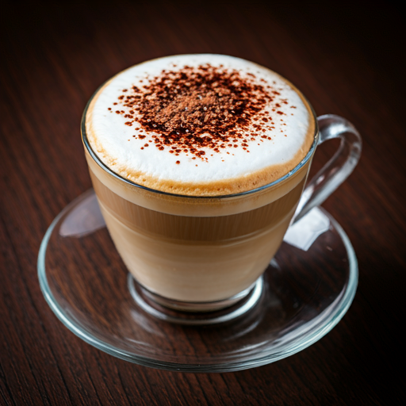
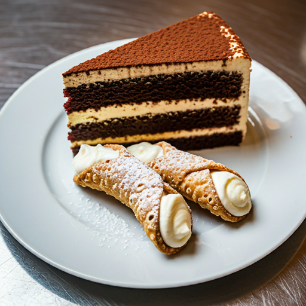

Espresso Clássico
Nossa especialidade! O espresso clássico da La Tazza é preparado com grãos selecionados e de torra fresca, proporcionando um sabor intenso e equilibrado. Cada xícara é extraída com perfeição, trazendo o autêntico sabor do café italiano.
Capuccino Cremoso
Um dos favoritos dos nossos clientes, o capuccino cremoso é feito com um blend de café, leite vaporizado e uma espuma espessa e aveludada, finalizado com uma pitada de cacau em pó. É uma verdadeira experiência de conforto em uma xícara.

Drinks Gelados
Para os dias mais quentes, oferecemos uma seleção refrescante de cafés gelados, como o Iced Latte e o Cold Brew. Feitos com métodos de extração a frio, nossos drinks gelados preservam a doçura natural do café e são ideais para quem quer se refrescar sem abrir mão do sabor.
Sobremesas Artesanais
Além dos nossos cafés, oferecemos uma linha de sobremesas artesanais, preparadas diariamente por nossa equipe de confeitaria. Experimente nossos cannolis italianos, tiramisù tradicional e tortas exclusivas, perfeitas para acompanhar o seu café.
